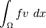

Source term bricks (and Neumann condition)¶
This brick adds a source term, i.e. a term which occurs only in the right hand side
of the linear (tangent) system build by the model. If  denotes the value
of the source term, the weak form of such a term is
denotes the value
of the source term, the weak form of such a term is

where  is the test function. The value can be constant or
described on a finite element method.
is the test function. The value can be constant or
described on a finite element method.
It can also represent a Neumann condition if it is applied on a boundary of the domain.
The function to add a source term to a model is:
add_source_term_brick(md, mim,
varname, dataexpr, region = -1,
directdataname = std::string());
where md``is the model object, ``mim is the integration method, varname is the variable of the model for which the source term is added, dataexpr has to be a regular expression of the weak form language (except for the complex version where it has to be a declared data of the model). It has to be scalar or vector valued depending on the fact that the variable is scalar or vector valued itself. region is a mesh region on which the term is added. If the region corresponds to a boundary, the source term will represent a Neumann condition. directdataname is an optional additional data which will directly be added to the right hand side without assembly.
The brick has a working complex version.
A slightly different brick, especially dedicated to deal with a Neumann condition, is added by the following function:
add_normal_source_term_brick(md, mim,
varname, dataexpr, region);
The difference compared to the basic source term brick is that the data should be a vector field (a matrix field if the variable varname is itself vector valued) and a scalar product with the outward unit normal is performed on it.

前のトピックへ
次のトピックへ
Download
Main documentations
- GetFEM++ User documentation
- Python Interface
- Matlab Interface
- Scilab Interface
- Gmm++
- GetFEM++ project